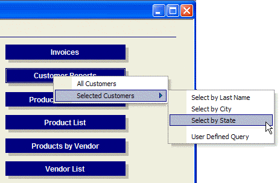

Creating and Using a Multi-Level Popup Menu
This topic refers to the AlphaSports sample database provided with Alpha Anywhere.
The most interesting aspect of Button9 is the menu of choices that appears with the OnPush event. This button runs the customer_report script, which produces this effect.

 Note : You can generate
menus with Action Scripting without writing Xbasic code.
Note : You can generate
menus with Action Scripting without writing Xbasic code.
The customer_report Script
The customer_report script displays the following menus. The following Xdialog and Xbasic code generate the menus and respond to the operator's selection.
First use Xdialog code to define and display a menu structure.
|
menu = <<%str% ' All Customers does not have child menu items All Customers ' Selected Customers has five child menu items Selected Customers|Select by Last Name Selected Customers|Select by City Selected Customers|Select by State Selected Customers|- ' separation bar Selected Customers|User Defined Query %str% ' Display the menu result = ui_popup_menu(menu) |
Define the action if the menu item is clicked.
|
if result = "All customers" then preview the Customer List" report report.preview("Customer List") else if result = "Select by Last Name" then ' play the cust_rep_for_lastname script script_play("cust_rep_for_lastname") else if result = "Select by City" then ' play the cust_rep_for_city script script_play("cust_rep_for_city") else if result = "Select by State" then ' play the cust_rep_for_state script script_play("cust_rep_for_state") else if result = "User Defined Query" then ' display the CustQueryReport form form.view("CustQueryReport") end if |
See Also
Display a Pick-List of Scripts, UI_POPUP_MENU()